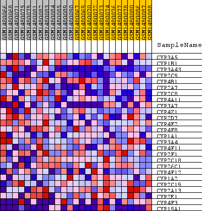
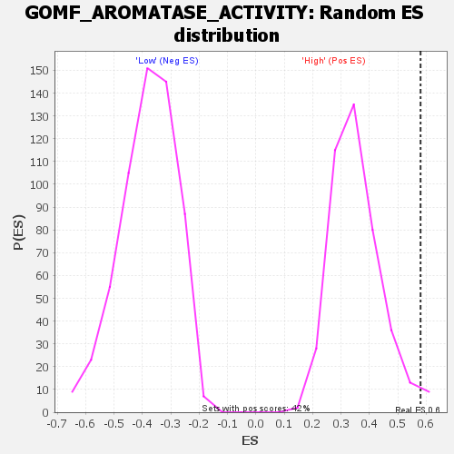

Profile of the Running ES Score & Positions of GeneSet Members on the Rank Ordered List
| Dataset | WG6v3.CPT1A.cls#High_versus_Low.CPT1A.cls#High_versus_Low_repos |
| Phenotype | CPT1A.cls#High_versus_Low_repos |
| Upregulated in class | High |
| GeneSet | GOMF_AROMATASE_ACTIVITY |
| Enrichment Score (ES) | 0.58056396 |
| Normalized Enrichment Score (NES) | 1.6369699 |
| Nominal p-value | 0.016746411 |
| FDR q-value | 1.0 |
| FWER p-Value | 1.0 |
| SYMBOL | TITLE | RANK IN GENE LIST | RANK METRIC SCORE | RUNNING ES | CORE ENRICHMENT | |
|---|---|---|---|---|---|---|
| 1 | CYP3A5 | CYP3A5 | 31 | 0.227 | 0.1709 | Yes |
| 2 | CYP1B1 | CYP1B1 | 199 | 0.138 | 0.2670 | Yes |
| 3 | CYP3A43 | CYP3A43 | 267 | 0.124 | 0.3576 | Yes |
| 4 | CYP2C9 | CYP2C9 | 314 | 0.117 | 0.4445 | Yes |
| 5 | CYP4B1 | CYP4B1 | 931 | 0.075 | 0.4697 | Yes |
| 6 | CYP2A7 | CYP2A7 | 962 | 0.074 | 0.5241 | Yes |
| 7 | CYP2C8 | CYP2C8 | 1017 | 0.072 | 0.5760 | Yes |
| 8 | CYP4A11 | CYP4A11 | 1728 | 0.054 | 0.5806 | Yes |
| 9 | CYP3A7 | CYP3A7 | 4315 | 0.024 | 0.4655 | No |
| 10 | CYP4Z1 | CYP4Z1 | 5523 | 0.016 | 0.4156 | No |
| 11 | CYP2D7 | CYP2D7 | 5877 | 0.014 | 0.4084 | No |
| 12 | CYP4F2 | CYP4F2 | 6478 | 0.012 | 0.3863 | No |
| 13 | CYP4F8 | CYP4F8 | 7488 | 0.008 | 0.3402 | No |
| 14 | CYP1A1 | CYP1A1 | 8373 | 0.005 | 0.2984 | No |
| 15 | CYP3A4 | CYP3A4 | 8789 | 0.004 | 0.2797 | No |
| 16 | CYP4F11 | CYP4F11 | 9717 | 0.001 | 0.2325 | No |
| 17 | CYP2F1 | CYP2F1 | 10514 | -0.002 | 0.1927 | No |
| 18 | CYP2C18 | CYP2C18 | 11401 | -0.004 | 0.1504 | No |
| 19 | CYP26C1 | CYP26C1 | 12047 | -0.007 | 0.1221 | No |
| 20 | CYP4F12 | CYP4F12 | 12792 | -0.009 | 0.0907 | No |
| 21 | CYP1A2 | CYP1A2 | 13064 | -0.010 | 0.0846 | No |
| 22 | CYP2C19 | CYP2C19 | 13885 | -0.014 | 0.0533 | No |
| 23 | CYP2A13 | CYP2A13 | 14444 | -0.018 | 0.0383 | No |
| 24 | CYP2E1 | CYP2E1 | 16745 | -0.041 | -0.0490 | No |
| 25 | CYP4F3 | CYP4F3 | 16890 | -0.043 | -0.0234 | No |
| 26 | CYP19A1 | CYP19A1 | 19277 | -0.202 | 0.0075 | No |

